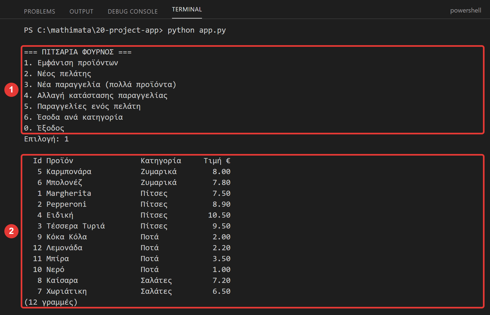
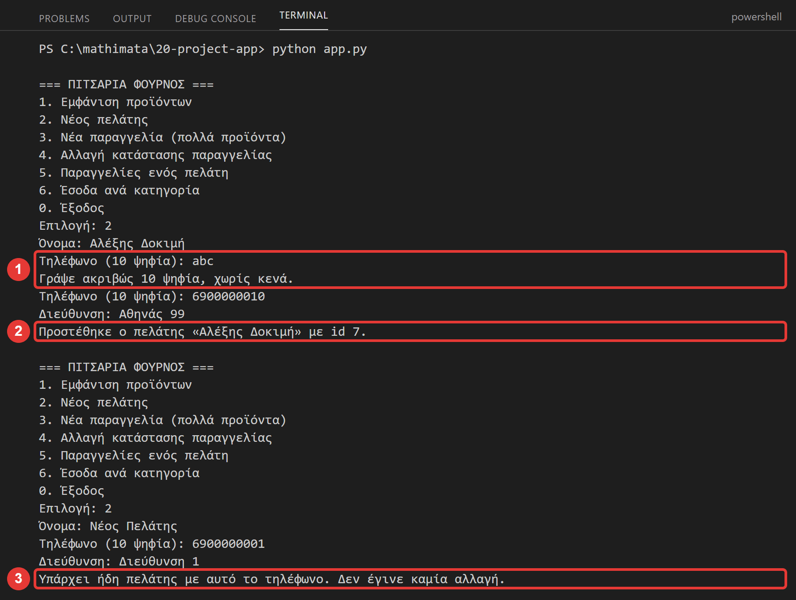
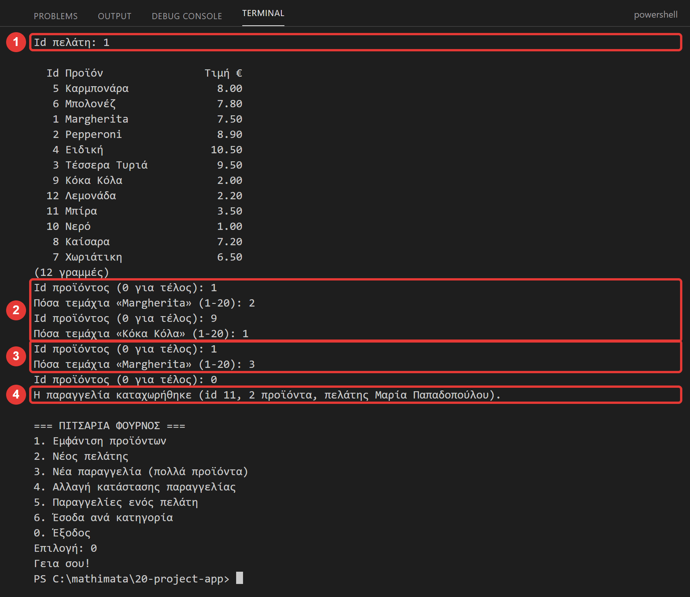
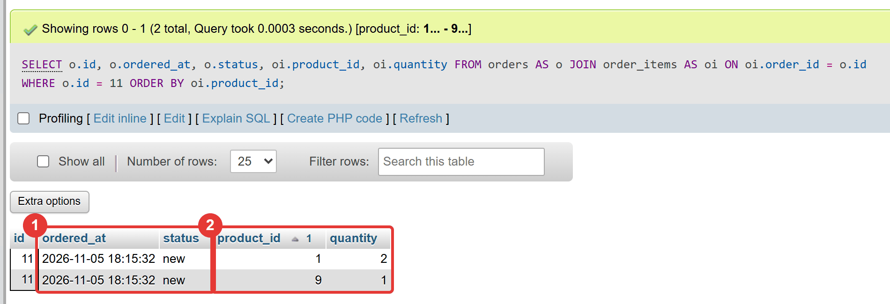
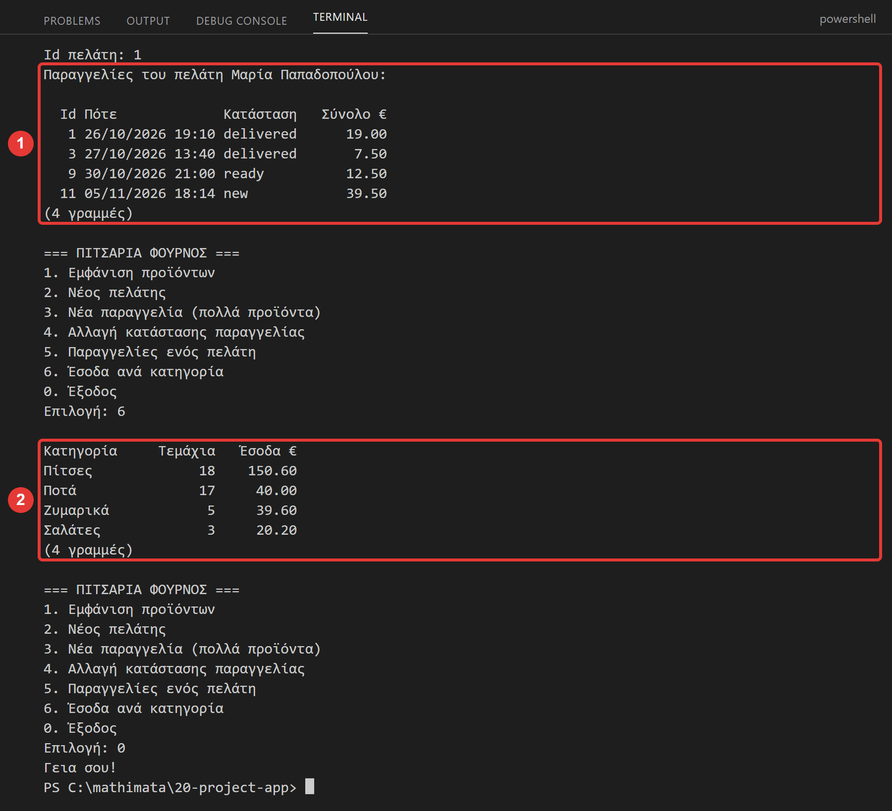
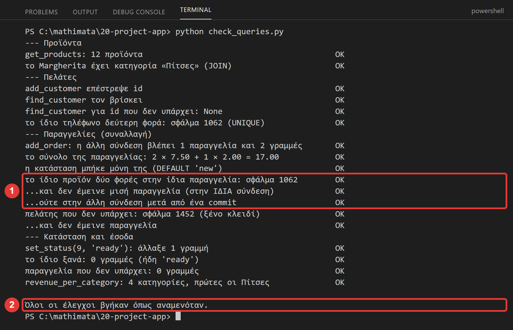
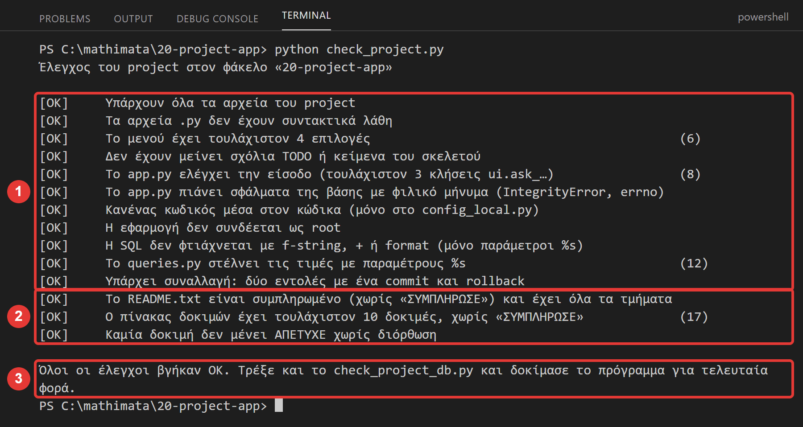
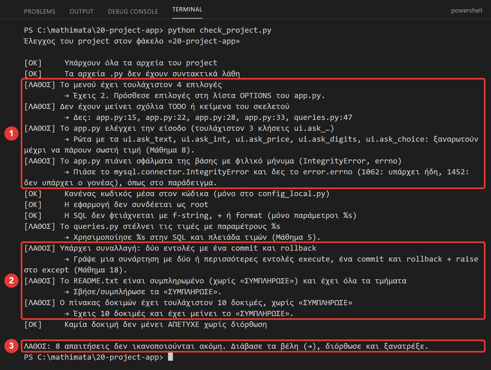

Μάθημα 20: Project (2/2): από το πρωτότυπο στην εφαρμογή¶
Python και βάση δεδομένων: εφαρμογή με μενού πάνω στη βάση του project σας (modules, JOIN, έλεγχος εισόδου, φιλικά μηνύματα σφαλμάτων, συναλλαγή), πίνακας δοκιμών, README και παρουσίαση
Διάρκεια: 2 κύκλοι × περίπου 45′ εργασία (2 διδακτικές ώρες). Δουλεύετε στο ίδιο ζεύγος με το Μάθημα 19.
Φύλλο εργασίας
Αυτή η σελίδα εξηγεί τα βήματα. Οι ασκήσεις και οι οδηγίες για κάθε κύκλο βρίσκονται στο Φύλλο εργασίας 20. Δούλεψε με τις δύο σελίδες ανοιχτές.
Αρχεία εργαστηρίου¶
| Αρχείο | Κύκλος | Τι είναι |
|---|---|---|
| config.py, config_local.example.py, db.py | 1 | ίδια με το Μάθημα 19 (αν δουλεύετε στον φάκελο του Μαθήματος 19, τα έχετε ήδη) |
| ui.py | 1 | νέο, έτοιμο: ερωτήσεις με έλεγχο εισόδου και εμφάνιση πίνακα |
| queries.py | 1–2 | σκελετός: τρεις έτοιμες γενικές συναρτήσεις και οι δικές σας |
| app.py | 1–2 | σκελετός: το μενού, η σύνδεση και τα σφάλματα |
| README.txt, test-plan.txt | 2 | πρότυπα για το README και τον πίνακα δοκιμών |
| check_project.py | 2 | έτοιμος έλεγχος του project σας |
| example/ | 1–2 | το παράδειγμα: η εφαρμογή της πιτσαρίας ολόκληρη (app.py, queries.py, ui.py, db.py, config.py, config_local.example.py, 01-schema.sql, 02-data.sql, 03-account.sql, check_queries.py, README.txt, test-plan.txt) |
Όπως στο Μάθημα 19, δεν υπάρχει έτοιμη λύση για το δικό σας θέμα. Υπάρχει ένα παράδειγμα, η εφαρμογή της πιτσαρίας, που κάνει ό,τι θα κάνετε κι εσείς. Την ανοίγετε, τη δοκιμάζετε, την διαβάζετε και μετά γράφετε τη δική σας για τη δική σας βάση.
Η αποστολή¶
Στο Μάθημα 19 φτιάξατε τη βάση. Σήμερα φτιάχνετε το πρόγραμμα που τη χρησιμοποιεί, δηλαδή το «πρόσωπο» του project: ένα μενού που ο χρήστης διαλέγει και η εφαρμογή τρέχει εντολές SQL για λογαριασμό του.
Σήμερα όμως δεν είναι μόνο ο κώδικας. Ένα project τελειώνει όταν:
- δουλεύει (και δεν «σπάει» όταν ο χρήστης γράψει κάτι λάθος),
- έχει δοκιμαστεί (πίνακας δοκιμών),
- το καταλαβαίνει κάποιος άλλος (README),
- μπορείτε να το παρουσιάσετε.
Όλα όσα έμαθες χρησιμοποιούνται εδώ: μενού με συναρτήσεις (Μάθημα 7), έλεγχος εισόδου και σφάλματα (8), λεξικά και JOIN από την Python (13), modules (15), ασφάλεια και %s (5, 17), συναλλαγές (18) και η βάση σας (19).
Στο τέλος θα μπορείς¶
- να χωρίζεις μια εφαρμογή σε στρώσεις (
app.py,ui.py,queries.py,db.py,config.py) και να εξηγείς τη δουλειά της καθεμιάς. - να γράφεις μια επιλογή του μενού που διαβάζει από πολλούς πίνακες (
JOIN) και την εμφανίζει σε πίνακα. - να γράφεις μια επιλογή που προσθέτει δεδομένα, με έλεγχο εισόδου και φιλικά μηνύματα για τα σφάλματα της βάσης (
1062,1452, …). - να γράφεις μια συναλλαγή από την Python: δύο ή περισσότερες εντολές με
commit,rollbackκαιraise. - να φτιάχνεις πίνακα δοκιμών (και θετικές και αρνητικές δοκιμές) και README που αρκεί για να τρέξει το project κάποιος άλλος.
- να παρουσιάζεις μια εφαρμογή και να εξηγείς τι δυσκολεύτηκες.
Πριν αρχίσεις¶
- Ξεκίνα τη MySQL και τον Apache από το XAMPP Control Panel.
- Η βάση σας πρέπει να υπάρχει, με δεδομένα και με τον λογαριασμό της (Μάθημα 19). Τρέξτε
python check_project_db.pyστον φάκελο του Μαθήματος 19: πρέπει να δώσει όλα[OK]. Αν η βάση λείπει (άλλος υπολογιστής ή χάλασε), ξαναφτιάξτε την από το αντίγραφο ασφαλείας του Μαθήματος 19:mariadb.exe --user=root -e "source my_project.sql"(με κάθετες/στη διαδρομή, Μάθημα 18), και μετά τρέξτε το03-account.sql. - Δουλέψτε στον φάκελο του Μαθήματος 19 (έχει ήδη τα
config.py,db.py,config_local.pyκαι τα αρχεία της βάσης σας): προσθέστε σε αυτόν τα νέα αρχείαui.py,queries.py,app.py,README.txt,test-plan.txt,check_project.pyκαι τον υποφάκελοexample. Αν ξεκινάτε από κενό φάκελο, κατεβάστε όλα τα αρχεία του πίνακα και βάλτε το01-schema.sqlτης βάσης σας. - Ανοίξτε το
project-design.txtτου Μαθήματος 19: το τμήμα 5 (τι θα δείχνει η εφαρμογή) είναι το σχέδιο του μενού σας.
Ο κύκλος εργασίας
Πρόβλεψη → εκτέλεση → σύγκριση → εξήγηση. Σήμερα το εφαρμόζετε στις δοκιμές: γράφετε πρώτα τι περιμένετε να γίνει, μετά τρέχετε, και συγκρίνετε.
Κύκλος 1 — Η εφαρμογή¶
Σε αυτόν τον κύκλο γράφετε τις δύο πρώτες επιλογές του μενού: μία που διαβάζει και μία που προσθέτει.
1.1 Από το μενού του σχεδιασμού στο πρόγραμμα¶
Στο project-design.txt γράψατε το μενού της εφαρμογής. Κάθε επιλογή θα γίνει δύο συναρτήσεις, σε δύο αρχεία (όπως στο Μάθημα 15):
| Αρχείο | Τι κάνει | Παράδειγμα (πιτσαρία, επιλογή 1) |
|---|---|---|
app.py |
το μενού, ό,τι ρωτά και τυπώνει, ο χειρισμός των σφαλμάτων | show_products(connection) |
queries.py |
μιλά με τη βάση: τρέχει SQL και επιστρέφει δεδομένα. Δεν τυπώνει και δεν ρωτά | get_products(connection) |
ui.py |
γενικές συναρτήσεις ερωτήσεων και εμφάνισης (έτοιμο) | ui.print_table(…) |
db.py, config.py |
η σύνδεση και οι ρυθμίσεις (έτοιμα από το 19) | db.connect() |
Ένας κανόνας: η SQL μένει στο queries.py. Το app.py δεν περιέχει SELECT. Έτσι αν αλλάξει η βάση, αλλάζεις ένα αρχείο, και το queries.py ελέγχεται και χωρίς το μενού.
Στο app.py η λίστα OPTIONS δένει τα νούμερα του μενού με τις συναρτήσεις: κάθε στοιχείο είναι ένα (κλειδί, κείμενο, συνάρτηση). Για να προσθέσεις επιλογή γράφεις μια συνάρτηση και μια γραμμή στη λίστα. Η main φτιάχνει από τη λίστα ένα λεξικό {"1": show_products, …} και τρέχει actions[choice](connection): ένα λεξικό μπορεί να κρατά και συναρτήσεις (δεν χρειάζεται μεγάλη αλυσίδα if/elif).
1.2 Τι είναι έτοιμο και τι γράφετε εσείς¶
Έτοιμα (δεν τα αλλάζετε):
| Συνάρτηση | Τι κάνει |
|---|---|
ui.ask_text(μήνυμα, μέγιστο μήκος) |
ρωτά ώσπου να γραφτεί κάτι (όχι κενό, όχι πολύ μακρύ) |
ui.ask_int(μήνυμα, από, έως) |
ρωτά ώσπου να γραφτεί ακέραιος στα όρια |
ui.ask_price(μήνυμα, από, έως) |
το ίδιο για ποσό (Decimal) |
ui.ask_digits(μήνυμα, πλήθος) |
ρωτά ώσπου να γραφτούν ακριβώς τόσα ψηφία (π.χ. τηλέφωνο) |
ui.ask_choice(μήνυμα, λίστα) |
ρωτά ώσπου να γραφτεί μία από τις επιτρεπόμενες τιμές |
ui.ask_yes_no(μήνυμα) |
ρωτά «ναι/όχι», επιστρέφει True/False |
ui.print_table(γραμμές, στήλες) |
τυπώνει λίστα από λεξικά ως πίνακα |
queries.select_all, select_one, change |
τρέχουν SELECT (λίστα ή μία γραμμή) και INSERT/UPDATE/DELETE (με commit, και rollback αν υπάρχει σφάλμα) |
Γράφετε εσείς: τις συναρτήσεις του queries.py (η SQL σας από το Μάθημα 19 γίνεται κείμενο συναρτήσεων), τις συναρτήσεις του app.py (τι ρωτάνε και τι τυπώνουν) και τη λίστα OPTIONS.
1.3 Παράδειγμα: μια επιλογή που διαβάζει¶
Η επιλογή 1 της πιτσαρίας δείχνει τα προϊόντα με την κατηγορία τους. Η SQL είναι ένα JOIN (Μάθημα 12). Στο queries.py γίνεται συνάρτηση που επιστρέφει τις γραμμές:
def get_products(connection):
"""Όλα τα προϊόντα, με το όνομα της κατηγορίας τους (JOIN): λίστα από λεξικά id, name, category, price."""
sql = (
"SELECT p.id, p.name, c.name AS category, p.price "
"FROM products AS p JOIN categories AS c ON p.category_id = c.id "
"ORDER BY c.name, p.name"
)
return select_all(connection, sql)
Στο app.py η επιλογή ρωτά και τυπώνει. Η print_table παίρνει τις γραμμές και μια λίστα από (κλειδί, τίτλος, πλάτος), όπου το κλειδί είναι το όνομα της στήλης (ή το ψευδώνυμο AS) του λεξικού:
def show_products(connection):
"""Επιλογή 1: εμφανίζει τα προϊόντα με την κατηγορία τους."""
rows = queries.get_products(connection)
ui.print_table(rows, [("id", "Id", 4), ("name", "Προϊόν", 20), ("category", "Κατηγορία", 12), ("price", "Τιμή €", 7)])

1.4 Παράδειγμα: μια επιλογή που προσθέτει¶
Η επιλογή 2 προσθέτει πελάτη. Το app.py ρωτά με έλεγχο (το τηλέφωνο θέλει 10 ψηφία) και πιάνει το σφάλμα της βάσης για να γράψει ένα φιλικό μήνυμα:
def add_customer(connection):
"""Επιλογή 2: ζητά τα στοιχεία ενός πελάτη και τον προσθέτει."""
name = ui.ask_text("Όνομα: ", 60)
phone = ui.ask_digits("Τηλέφωνο (10 ψηφία): ", 10)
address = ui.ask_text("Διεύθυνση: ", 100)
try:
customer_id = queries.add_customer(connection, name, phone, address)
print(f"Προστέθηκε ο πελάτης «{name}» με id {customer_id}.")
except mysql.connector.IntegrityError as error:
if error.errno == 1062:
print("Υπάρχει ήδη πελάτης με αυτό το τηλέφωνο. Δεν έγινε καμία αλλαγή.")
else:
print("Η βάση δεν δέχτηκε τα δεδομένα:", error.msg)
Το queries.add_customer είναι μόνο δύο γραμμές (η change κάνει το commit και το rollback):
def add_customer(connection, name, phone, address):
"""Προσθέτει έναν πελάτη και επιστρέφει το id του. Αν το τηλέφωνο υπάρχει ήδη, η βάση δίνει σφάλμα 1062 (UNIQUE)."""
sql = "INSERT INTO customers (name, phone, address) VALUES (%s, %s, %s)"
rowcount, customer_id = change(connection, sql, (name, phone, address))
return customer_id
Δύο στρώματα προστασίας (και τα δύο χρειάζονται, Μάθημα 17):
- Ο έλεγχος εισόδου του
uiεμποδίζει τις προφανώς λάθος τιμές (γράμματα στο τηλέφωνο) πριν φτάσουν στη βάση. - Οι κανόνες της βάσης (
UNIQUE,CHECK, ξένα κλειδιά) πιάνουν ό,τι ο έλεγχος δεν ξέρει (τηλέφωνο που υπάρχει ήδη). Τοerror.errnoλέει ποιος κανόνας παραβιάστηκε:
errno |
Τι σημαίνει | Τι να πεις στον χρήστη |
|---|---|---|
| 1062 | η τιμή υπάρχει ήδη (UNIQUE ή πρωτεύον κλειδί) |
«Υπάρχει ήδη …» |
| 1452 | το παιδί δείχνει σε γονέα που δεν υπάρχει (ξένο κλειδί) | «Δεν υπάρχει … με αυτό το id» |
| 4025 | η τιμή παραβιάζει ένα CHECK |
«Η τιμή είναι εκτός ορίων» |
| 1451 | ο γονέας έχει ακόμη παιδιά και δεν σβήνεται | «Έχει συνδεδεμένα στοιχεία: σβήσε πρώτα …» |

Στάδιο 1 — Γνωριμία με το παράδειγμα¶
Πριν γράψετε τα δικά σας, δείτε την εφαρμογή της πιτσαρίας να δουλεύει. Σε ξεχωριστό φάκελο:
- Τρέξτε στο phpMyAdmin (Import, χωρίς επιλεγμένη βάση) τα
example/01-schema.sqlκαιexample/02-data.sql, και ένα-ένα τα ερωτήματα τουexample/03-account.sql. - Αντιγράψτε το
example/config_local.example.pyωςconfig_local.py. - Στο τερματικό, μέσα στον φάκελο
example:python app.py. Δοκιμάστε όλες τις επιλογές, και δοκιμάστε και λάθη (γράμματα στο τηλέφωνο, ένα τηλέφωνο που υπάρχει, ένα id που δεν υπάρχει). - Διαβάστε το
app.pyκαι τοqueries.py: πού είναι κάθε επιλογή του μενού;
Στάδιο 2 — Η δική σας επιλογή 1: ανάγνωση¶
Στον φάκελο του project σας:
- Στο
config.pyδείτε ότι τοDATABASEέχει το όνομα της βάσης σας (το άλλαξε το Μάθημα 19). - Στο
queries.pyγράψτε (TODO 1) μια συνάρτηση που τρέχει ένα από τα ερωτήματα του04-queries.sqlσας (μεJOIN) και επιστρέφει τις γραμμές μεselect_all. - Στο
app.pyγράψτε τηνshow_things(TODO 2), που την καλεί και τυπώνει το αποτέλεσμα μεui.print_table. Αλλάξτε τοTITLE(TODO 1 τουapp.py) και το κείμενο της επιλογής στη λίσταOPTIONS. - Τρέξτε
python app.pyκαι δοκιμάστε την επιλογή.
Στάδιο 3 — Η δική σας επιλογή 2: προσθήκη¶
- Στο
queries.pyγράψτε (TODO 2) μια συνάρτηση που προσθέτει μια γραμμή (INSERTμε%sκαιchange) και επιστρέφει το id της. - Στο
app.pyγράψτε τηνadd_thing(TODO 3): ρωτά με τιςui.ask_…(ταιριάζει η κάθε στήλη σας: κείμενο, ακέραιος, ποσό, ψηφία, επιλογή), καλεί τη συνάρτησή σας και πιάνει τοIntegrityErrorγια ταerrnoπου ταιριάζουν στον πίνακά σας. - Δοκιμάστε: μια σωστή προσθήκη, μια τιμή που ο έλεγχος απορρίπτει, και μια τιμή που τη δέχεται ο έλεγχος αλλά την απορρίπτει η βάση (π.χ. μοναδική τιμή που υπάρχει ήδη).
Συνέχισε στο Φύλλο εργασίας.
Κύκλος 2 — Ολοκλήρωση, δοκιμές και παρουσίαση¶
Σε αυτόν τον κύκλο προσθέτετε μια συναλλαγή και μια αναφορά ή αλλαγή, δοκιμάζετε συστηματικά, γράφετε το README και παρουσιάζετε.
2.1 Η συναλλαγή¶
Στο Μάθημα 18 έμαθες ότι μια δουλειά που θέλει δύο εντολές πρέπει να γίνεται σε μία συναλλαγή: ή όλη ή καθόλου. Η νέα παραγγελία της πιτσαρίας είναι τέτοια: ένα INSERT στον orders και ένα executemany στον order_items:
def add_order(connection, customer_id, items):
"""Καταχωρεί μια παραγγελία ΜΕ τα προϊόντα της, σε ΜΙΑ συναλλαγή (Μάθημα 18). Επιστρέφει το id της παραγγελίας.
items: λίστα από (id προϊόντος, ποσότητα). Δύο εντολές: ένα INSERT στον orders και ένα executemany στον order_items. Αν κάτι πάει στραβά, γίνεται
rollback ΚΑΙ για τις δύο και το σφάλμα ξαναπετιέται: ούτε παραγγελία χωρίς προϊόντα ούτε προϊόντα χωρίς παραγγελία. Η ώρα και η κατάσταση ('new')
μπαίνουν μόνες τους από τα DEFAULT της βάσης.
"""
with connection.cursor() as cursor:
try:
cursor.execute("INSERT INTO orders (customer_id) VALUES (%s)", (customer_id,))
order_id = cursor.lastrowid
rows = []
for product_id, quantity in items:
rows.append((order_id, product_id, quantity))
cursor.executemany("INSERT INTO order_items (order_id, product_id, quantity) VALUES (%s, %s, %s)", rows)
connection.commit()
except mysql.connector.Error:
connection.rollback()
raise
return order_id
Ό,τι έμαθες στο Μάθημα 18 ισχύει: ένα commit μετά και τις δύο εντολές, rollback και raise στο except. Οι τιμές ordered_at και status μπαίνουν μόνες τους από τα DEFAULT του σχήματος. Στο app.py η επιλογή 3 μαζεύει τα προϊόντα (ρωτά ώσπου ο χρήστης να γράψει 0, και αθροίζει την ποσότητα όταν το ίδιο προϊόν γράφεται δύο φορές, γιατί το ζεύγος παραγγελία-προϊόν είναι πρωτεύον κλειδί) και μετά καλεί την queries.add_order:

Στο phpMyAdmin φαίνεται ότι η μία συναλλαγή έγραψε στους δύο πίνακες, και ότι η ώρα και η κατάσταση μπήκαν μόνες τους:

Δεν είναι κάθε project ίδιο, αλλά κάθε project έχει μια δουλειά με δύο βήματα. Δείτε ιδέες:
| Θέμα | Η συναλλαγή (δύο ή περισσότερα βήματα) |
|---|---|
| Κτηνιατρείο | νέα επίσκεψη (visits) και οι θεραπείες της (visit_treatments) |
| Ταινιοθήκη / σινεμά | νέα προβολή και τα εισιτήρια που πουλήθηκαν |
| Αθλητικός σύλλογος | νέος αγώνας και οι συμμετοχές των αθλητών |
| Ωδείο | νέα εγγραφή μαθητή και οι ώρες των μαθημάτων του |
| Ενοικίαση ποδηλάτων | νέα ενοικίαση και η αλλαγή της διαθεσιμότητας του ποδηλάτου (όπως ο δανεισμός του Μαθήματος 18) |
| Σχολικές εκδρομές | εγγραφή πολλών μαθητών σε μια εκδρομή (ή όλοι ή κανένας) |
| Βιβλιοπωλείο | νέα πώληση και οι γραμμές της (βιβλία και ποσότητες) |
| Ξενοδοχείο | νέα κράτηση και οι υπηρεσίες της |
| Συνταγές | νέα συνταγή και τα υλικά της (με ποσότητες) |
Στάδιο 4 — Η δική σας συναλλαγή¶
- Στο
queries.pyγράψτε (TODO 3) μια συνάρτηση με δύο ή περισσότερες εντολές σε μία συναλλαγή, με το πρότυπο τηςadd_order(commitμία φορά,rollbackκαιraiseστοexcept). - Στο
app.pyγράψτε την επιλογή (ρωτά, καλεί τη συνάρτηση, πιάνει τα σφάλματα με φιλικό μήνυμα και λέει ρητά «Δεν έγινε καμία αλλαγή») και προσθέστε τη στη λίσταOPTIONS. - Δοκιμάστε μια σωστή εκτέλεση και μια που αποτυγχάνει στη μέση (π.χ. ένα στοιχείο που παραβιάζει κανόνα). Ελέγξτε στο phpMyAdmin ότι δεν έμεινε τίποτα μισό.
2.2 Αναφορά ή αλλαγή¶
Για την τέταρτη επιλογή διαλέξτε ένα από τα δύο, με πρότυπα στο παράδειγμα:
- Αναφορά με
GROUP BY(revenue_per_category): σύνολα ανά ομάδα. Η SQL είναι ήδη το ερώτημα 3 του04-queries.sql. - Αλλαγή (
set_status):UPDATEμεrowcount. Θυμήσου (Μάθημα 6): τοrowcountμετρά τις γραμμές που άλλαξαν, άρα 0 σημαίνει «δεν υπάρχει το id ή είχε ήδη αυτή την τιμή».

Στάδιο 5 — Η δική σας τέταρτη επιλογή¶
Γράψτε τη συνάρτηση στο queries.py (TODO 4) και την επιλογή στο app.py. Τώρα το μενού σας έχει τέσσερις επιλογές. Τρέξτε python check_project.py: τι λέει ο έλεγχος μέχρι εδώ;
2.3 Ο πίνακας δοκιμών¶
Ένα πρόγραμμα που «δουλεύει στον υπολογιστή μου» δεν έχει δοκιμαστεί. Ο πίνακας δοκιμών (test-plan.txt) γράφει τι δοκιμάσατε και τι έγινε. Κανόνες:
- Γράψτε πρώτα τι περιμένετε, και μετά τρέξτε. (Αλλιώς δεν ξέρετε τι σημαίνει «σωστό».)
- Για κάθε επιλογή: μία δοκιμή που πηγαίνει καλά (θετική) και μία που δοκιμάζει κάτι λάθος (αρνητική: κενό, γράμματα αντί για αριθμό, αριθμός εκτός ορίων, τιμή που υπάρχει ήδη, id που δεν υπάρχει).
- Μία δοκιμή: λάθος κωδικός στο
config_local.py(το πρόγραμμα πρέπει να δώσει μήνυμα και όχι traceback). - Αν μια δοκιμή αποτύχει, διορθώστε το πρόγραμμα και ξαναδοκιμάστε: γράψτε «ΑΠΕΤΥΧΕ → διορθώθηκε → ΠΕΤΥΧΕ».
- Τουλάχιστον 10 δοκιμές.
Έτσι μοιάζουν οι πρώτες γραμμές του πίνακα της πιτσαρίας (ο πλήρης έχει 17 δοκιμές στο example/test-plan.txt):
Α/Α | Επιλογή | Τι κάνω | Τι περιμένω | Τι έγινε | Αποτέλεσμα
----+---------+----------------------------------------------------+-----------------------------------------------------+------------------------------------------------------+-----------
1 | 1 | Εμφάνιση προϊόντων | 12 προϊόντα με κατηγορία και τιμή | 12 γραμμές, ταξινομημένες κατά κατηγορία | ΠΕΤΥΧΕ
2 | 2 | Νέος πελάτης: Αλέξης Δοκιμή, 6900000010, Αθηνάς 99 | Μήνυμα επιτυχίας με το νέο id | «Προστέθηκε ο πελάτης «Αλέξης Δοκιμή» με id 7.» | ΠΕΤΥΧΕ
3 | 2 | Νέος πελάτης με τηλέφωνο «abc» | Ξαναρωτά το τηλέφωνο | «Γράψε ακριβώς 10 ψηφία, χωρίς κενά.» και ξαναρώτησε | ΠΕΤΥΧΕ
4 | 2 | Νέος πελάτης με τηλέφωνο «12345» | Ξαναρωτά (10 ψηφία) | Το ίδιο μήνυμα, ξαναρώτησε | ΠΕΤΥΧΕ
Στη στρώση δεδομένων μπορείτε να δοκιμάζετε και χωρίς το μενού, όπως στο Μάθημα 15. Το example/check_queries.py καλεί τις συναρτήσεις του queries.py με δύο συνδέσεις, και ελέγχει και τη συναλλαγή (το ίδιο προϊόν δύο φορές σε μία παραγγελία πρέπει να αποτύχει χωρίς να μείνει μισή παραγγελία):

Στάδιο 6 — Ο πίνακας δοκιμών σας¶
Συμπληρώστε το test-plan.txt (τουλάχιστον 10 δοκιμές). Τρέξτε το πρόγραμμα και κάντε πράγματι τις δοκιμές, με τη σειρά.
2.4 Το README¶
Το README είναι το «φυλλάδιο οδηγιών» του project. Το διαβάζει κάποιος που δεν ξέρει το project σας (ένας άλλος μαθητής, ο διδάσκων, ο εαυτός σας σε ένα χρόνο). Πρέπει να μπορεί να το τρέξει μόνο από αυτό. Το πρότυπο έχει οκτώ τμήματα: τι κάνει, τι χρειάζεται, πώς τρέχει (βήμα προς βήμα, με τη σειρά των αρχείων), το μενού, η βάση, τα αρχεία, οι δοκιμές, τα όρια και οι επεκτάσεις. Δείτε το example/README.txt.
Στάδιο 7 — Το README σας¶
Συμπληρώστε το README.txt (σβήστε κάθε «ΣΥΜΠΛΗΡΩΣΕ»). Δοκιμάστε το: διαβάστε το «Πώς τρέχει» σαν να μην ξέρατε το project. Λείπει κάποιο βήμα;
2.5 Ο έλεγχος του project¶
Τρέξτε python check_project.py. Ελέγχει τις ελάχιστες απαιτήσεις του project: αρχεία, τουλάχιστον 4 επιλογές, έλεγχο εισόδου, φιλικά μηνύματα σφαλμάτων, κανένας κωδικός μέσα στον κώδικα, κανένα root, SQL μόνο με παραμέτρους (χωρίς f-string), μια συναλλαγή, README και πίνακας δοκιμών. Έτσι μοιάζει όταν περνούν όλα (για το παράδειγμα της πιτσαρίας):

Και έτσι μοιάζει ένας σκελετός που δεν έχει ακόμη δουλευτεί: οι αποτυχίες είναι η λίστα εργασιών σας:

Τι ελέγχει και τι όχι
Ο έλεγχος διαβάζει τα αρχεία ως κείμενο. Δεν ξέρει αν το πρόγραμμά σας είναι καλό, ούτε αν κάνει αυτό που θέλει ο χρήστης. Αυτό το δείχνουν οι δοκιμές και η παρουσίαση.
2.6 Η παρουσίαση¶
Η παρουσίαση δεν είναι «διαβάζω τον κώδικα». Σε 4–5 λεπτά λέτε και δείχνετε:
- Η ιδέα (1′): τι είναι το project, ποιος το χρησιμοποιεί, ποιες ερωτήσεις απαντά η βάση.
- Η βάση (1′): το διάγραμμα του Designer, οι πίνακες και οι σχέσεις (1:N και N:N).
- Η εφαρμογή ζωντανά (2′): τρεις επιλογές του μενού, και μία που αποτυγχάνει (ένα λάθος της εισόδου ή ένα σφάλμα της βάσης), για να φανεί ότι η εφαρμογή δεν σπάει.
- Τι δυσκολευτήκατε (1′): ένα λάθος που κάνατε και πώς το βρήκατε. Και μία επέκταση που θα προσθέτατε.
Ένας από τους δύο μιλά για τη βάση και ο άλλος κάνει τη ζωντανή επίδειξη: και οι δύο μιλάτε.
Στάδιο 8 — Παρουσίαση¶
Παρουσιάστε το project σας σε άλλο ζεύγος (ή στην τάξη, αν το επιτρέπει ο χρόνος) και ακούστε μια άλλη παρουσίαση. Στο Φύλλο εργασίας υπάρχει μια φόρμα με ερωτήσεις για να δώσετε και να πάρετε σχόλια.
Το τέλος του μαθήματος¶
Έφτασες στο τέλος των 20 μαθημάτων. Δες τι έχεις φτιάξει:
| Μέρος | Τι έμαθες |
|---|---|
| Α — Βάση και SQL (1–2) | μια βάση, πίνακες, τύποι, INSERT, SELECT |
| Β — Python και MySQL (3–10) | σύνδεση από την Python, WHERE/ORDER BY, INSERT/UPDATE/DELETE με %s, μενού, έλεγχος εισόδου, κανόνες UNIQUE/CHECK, ημερομηνίες, GROUP BY |
| Γ — Πολλοί πίνακες και ολοκληρωμένες εφαρμογές (11–18) | ξένα κλειδιά, JOIN, πολλά-προς-πολλά, modules, αναφορές και CSV, ασφάλεια (λογαριασμοί, SQL injection), αντίγραφα και συναλλαγές |
| Δ — Project (19–20) | σχεδίασες μια βάση από τις ερωτήσεις της και έφτιαξες μια εφαρμογή πάνω της, με δοκιμές, README και παρουσίαση |
Και τώρα; Όσα έμαθες μεταφέρονται: τα ίδια ερωτήματα SQL δουλεύουν (με μικρές διαφορές) σε κάθε σχεσιακή βάση, και η ιδέα των στρώσεων (app, ui, queries, db) ισχύει σε κάθε εφαρμογή. Μερικοί επόμενοι δρόμοι, αν θες να συνεχίσεις μόνος σου:
- Ιστοσελίδα πάνω στη βάση σου: το
Flask(πλαίσιο της Python για ιστοσελίδες) χρησιμοποιεί το ίδιοqueries.py. - Γραφικό περιβάλλον αντί για μενού κειμένου: το
tkinterείναι ήδη μέσα στην Python. - Ευρετήρια (
INDEX) και όψεις (VIEW) για ταχύτητα και ευκολία, όταν οι πίνακες μεγαλώσουν. - Άλλες βάσεις (
SQLite,PostgreSQL) και βιβλιοθήκες που γράφουν την SQL για σένα (SQLAlchemy).
Έλεγχος πριν ολοκληρώσεις¶
- □ Η εφαρμογή έχει τουλάχιστον 4 επιλογές και δουλεύει χωρίς σφάλματα στη σωστή χρήση.
- □ Όλες οι τιμές του χρήστη ελέγχονται (
ui.ask_…) και τα σφάλματα της βάσης έχουν φιλικό μήνυμα. - □ Η SQL είναι μόνο στο
queries.py, με%s, και δεν υπάρχει κωδικός μέσα στον κώδικα. - □ Υπάρχει μία συναλλαγή (δύο βήματα, ένα
commit,rollbackκαιraise) και είδες ότι δεν μένει τίποτα μισό. - □ Ο πίνακας δοκιμών έχει τουλάχιστον 10 δοκιμές, θετικές και αρνητικές, και καμία δεν μένει
ΑΠΕΤΥΧΕ. - □ Το README αρκεί για να τρέξει το project κάποιος άλλος.
- □
python check_project.pyκαιpython check_project_db.py: όλα[OK]. - □ Παρουσιάσατε και ακούσατε μια άλλη παρουσίαση.
- □ Όταν τελείωσες, σταμάτησες τον Apache και τη MySQL.
Για να θυμάσαι¶
- Στρώσεις:
app.py(μενού, ερωτήσεις, μηνύματα),ui.py(ερωτήσεις και εμφάνιση),queries.py(SQL),db.pyκαιconfig.py(σύνδεση και ρυθμίσεις). Η SQL μένει στοqueries.py. - Κάθε επιλογή του μενού = μία συνάρτηση του
app.py+ μία τουqueries.py. Η λίσταOPTIONSδένει τα νούμερα με τις συναρτήσεις. - Ο έλεγχος εισόδου (
ui.ask_…) και οι κανόνες της βάσης (errno1062, 1452, 4025, 1451) είναι δύο στρώματα: χρειάζονται και τα δύο. - Μια δουλειά με δύο βήματα γίνεται σε μία συναλλαγή:
commitμία φορά,rollbackκαιraiseστοexcept. - Δοκιμές: γράφεις πρώτα τι περιμένεις· θετικές και αρνητικές δοκιμές για κάθε επιλογή· μια αποτυχία διορθώνεται και ξαναδοκιμάζεται.
- README: το διαβάζει κάποιος που δεν ξέρει το project· πρέπει να τρέχει μόνο από αυτό.
- Ο κωδικός μένει στο
config_local.py, ποτέ μέσα στον κώδικα ή στο git.
Λεξιλόγιο¶
εφαρμογή, στρώση (layer), μενού, λίστα OPTIONS, θετική / αρνητική δοκιμή, πίνακας δοκιμών, README, φιλικό μήνυμα, παρουσίαση, επέκταση.
Δική σου εκδοχή¶
Αν τελειώσετε νωρίτερα, δουλέψτε με μία αλλαγή τη φορά και τρέχετε το πρόγραμμα και τον έλεγχο μετά από κάθε αλλαγή:
- Πρόκληση 1: προσθέστε επιλογή διαγραφής με επιβεβαίωση (
ui.ask_yes_no). Πιάστε το σφάλμα1451(ο γονέας έχει παιδιά) και πείτε στον χρήστη ποιος πίνακας εμποδίζει. Δοκιμάστε με μια γραμμή που δεν έχει παιδιά και με μία που έχει. - Πρόκληση 2: προσθέστε επιλογή αναζήτησης με κείμενο (
LIKE), με την τιμή"%" + text + "%"να πηγαίνει ως παράμετρος (Μάθημα 17). Τι βρίσκει η αναζήτηση%; - Πρόκληση 3: γράψτε δικό σας
check_queries.pyγια τοqueries.pyσας, με το πρότυπο τουexample/check_queries.py(δύο συνδέσεις, καθαρισμός πριν και μετά), που ελέγχει και τη συναλλαγή σας. - Πρόκληση 4: προσθέστε επιλογή εξαγωγής σε CSV μιας αναφοράς (Μάθημα 16:
csv.writer,delimiter=";",utf-8-sig).